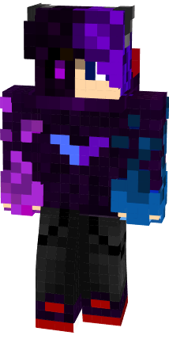

Welcome to
100Lives
100Lives is a Minecraft SMP that combines the best of survival mode and hardcore mode. Lose all of your lives and your out of the game.
SERVER IS UNAVAILABLE AT THIS TIME.
Welcome to
100Lives is a Minecraft SMP that combines the best of survival mode and hardcore mode. Lose all of your lives and your out of the game.
SERVER IS UNAVAILABLE AT THIS TIME.
Hi. I'm NeonExcel, I'm a Minecraft player who realizes Minecraft is a multiplayer game, It's meant to be played with friends, And so I take the initiative to create fun Minecraft servers for me and my friends to play. However, Minecraft isn't my only hobby, I like to play sports, (my main sport being badminton.) I like to create things, And I like to just hang out with friends in general.


100Lives is a "MediumCore" Minecraft server, Its simple, You have 100 lives, Lose all of them and you will be put in spectator mode.
You can craft an extra life by combining a golden apple, a nether star, and a totem of undying. You can then apply the extra life by sneaking.
If you get eliminated, there is a way to come back, If someone renames an armour stand with a eliminated player's username and gives the armour stand a live, That player will be brought back to life.
*Rules will be added or removed as needed. Breaking any rule has the possibility of resulting in a temporary ban, up to 10 lives being removed, or more depending on what you did.